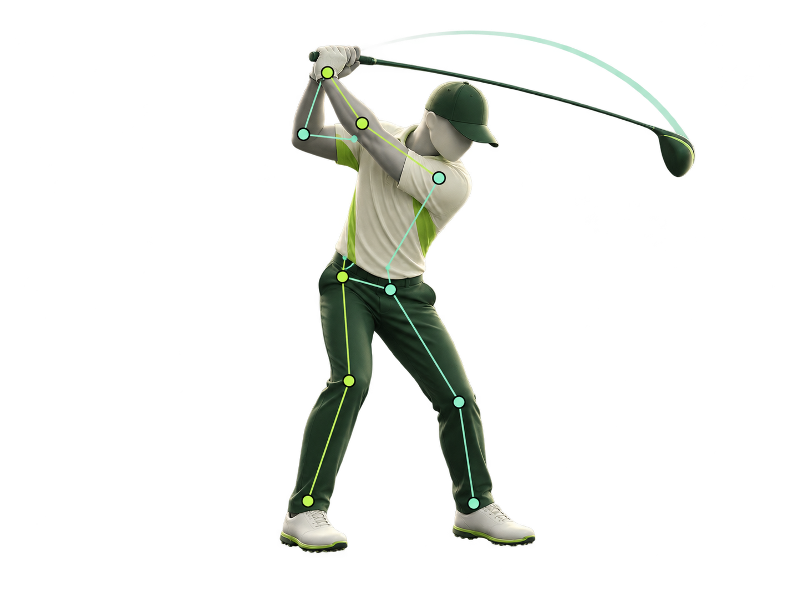
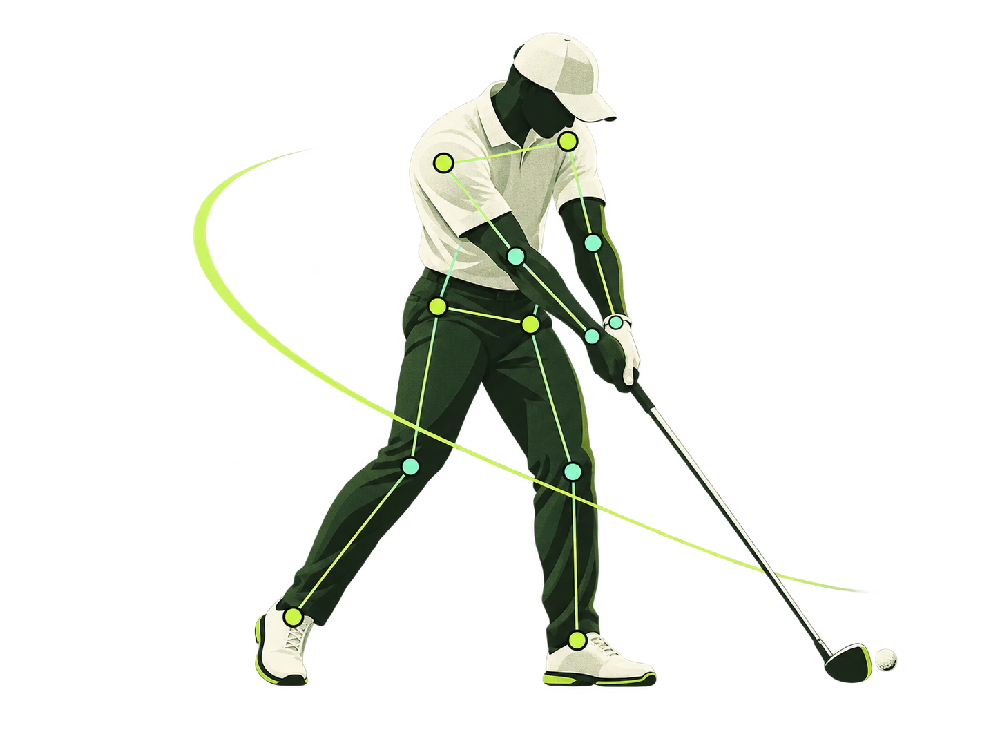
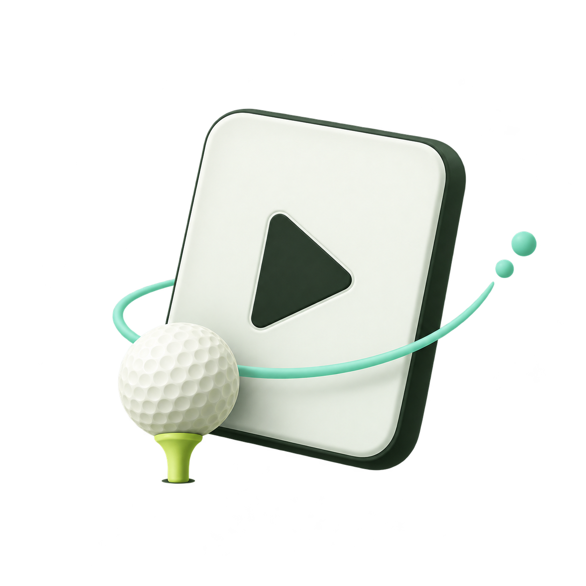

DARK · Club Lime

SPINE 29.4°SHOULDER 64.2°FRAME 0187/0266
계측 문구는 현재 Hero의 HTML 예시이며 그림에서 측정한 값이 아닙니다.

SPINE 29.4°SHOULDER 64.2°FRAME 0187/0266

업로드 · 160px기록 없음 · 120px
LIGHT · Club Lime
SPINE 29.4°SHOULDER 64.2°FRAME 0187/0266
동일한 투명 PNG를 사용하며 배경과 HTML 계측 문구만 테마에 맞춥니다.
SPINE 29.4°SHOULDER 64.2°FRAME 0187/0266
업로드 · 160px
기록 없음 · 120px